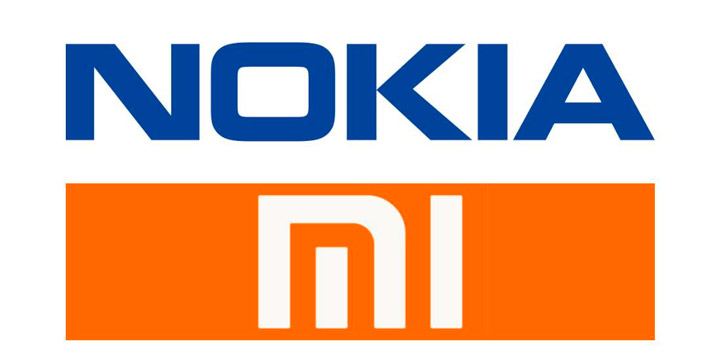

Historia breve
Es una empresa china dedicada a crear equipos electrónicos, tanto telefónicos como artículos para el hogar. Xiaomi se ha abierto paso al mercado mundial abriendo varias tiendas físicas y en determinados países de Asia, Europa e Iberoamérica, además de su sitio web y distribuidores oficiales.
Desde el lanzamiento de su primer teléfono inteligente en agosto de 2011, Xiaomi ha ganado cuota de mercado en China y ha ampliado su línea productos a otros dispositivos electrónicos.
En 2013, la empresa consiguió convertir al Xiaomi Mi 2S en el móvil más popular de China, por delante del Galaxy S4 de Samsung y del iPhone 5 de Apple, según los datos de la consultora especializada
39°55′15″N 116°26′10″E.
3 productos reconocidos de la empresa
Enfoque de la empresa
Ser una empresa de tecnología hoy en día no es fácil ya que también hay que interactuar con políticas verdes a nivel mundial. En este sentido, recordamos la opción, para algunos mercados, de no incluir el adaptador de carga en la caja de venta del teléfono inteligente. Xiaomi. Ejemplo sacrosanto tomado por Apple, por cierto. Bueno, hoy Xiaomi tiene publicado hoy la edición 2020 de su Reporte de Sostenibilidad que explica el enfoque y las prácticas de la empresa para el desarrollo sostenible. Veamos los detalles.
Colaboraciones

Producto mas innovador
Hace poco menos de un mes fue presentado en China en una convención pero su llegada a España es un hecho. El Xiaomi Mi 9 va a ser uno de los primeros móviles que tenga conectividad 5G, sin duda una auténtica revolución. Un smartphone de alta gama a un precio asequible para cualquier bolsillo porque desde 351€ puede ser tuyo. El Xiaomi Mi 9 tiene un diseño elegante, fino con bordes en forma redonda y fácil de agarrar con una mano. El objetivo de la marca era mejorar su antecesor, el Mi8, y lo ha conseguido porque con el mismo tamaño ha podido ganar más pulgadas. La pantalla es de 6,39 pulgadas. El Smartphone tiene un procesador rapidísimo que permite realizar cualquier tarea sin problemas y sin llegar aumentar la temperatura interna del teléfono. Sin olvidarnos de la calidad de sus cámaras, tanto la de la parte delantera con 20 megapíxeles como trasera que cuenta con triple cámara con 48 MP f/1.8 + 16 MP f/2.2 (gran angular) + 12 MP (tele). La tarjeta RAM es de 6GB y cuenta con el procesador Snapdragon 855. Una de sus principales novedades es el modo oscuro que cambia según el momento del día.

Directivos
Lin Bin

Datos sobre su fundador
Es uno de los cofundadores y director ejecutivo de la empresa china Xiaomil. La empresa china fue creada en 2010, junto a su amigo Lin Bin, y se dedicada al diseño, desarrollo y venta de teléfonos inteligentes, aplicaciones informáticas y otros productos electrónicos. En 2013, la empresa ha conseguido convertir unos de sus modelos, el Xiaomi Mi2S, en el móvil más popular de China, por delante del Galaxy 4 de Samsung y del iPhone 5 de Apple, según los datos de la consultora especializada Antutu, con un producto competitivo y más barato que sus competidores